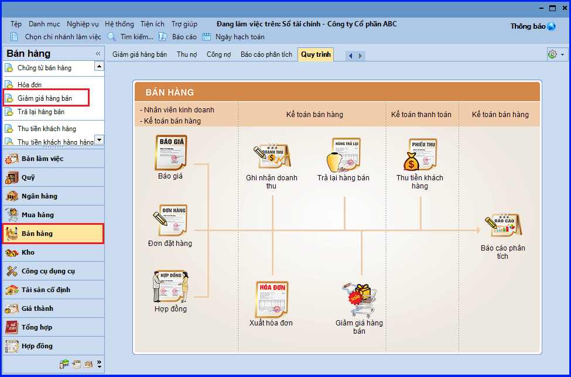
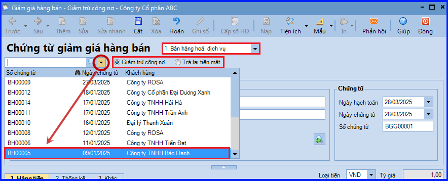
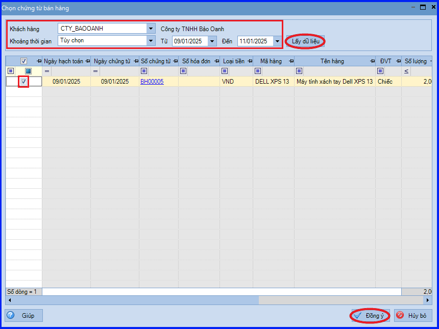
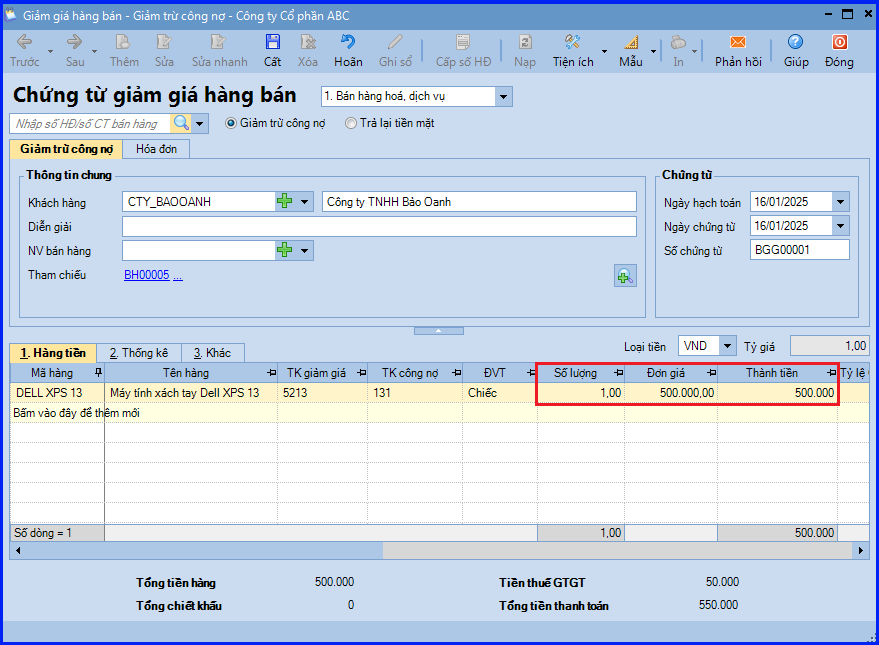
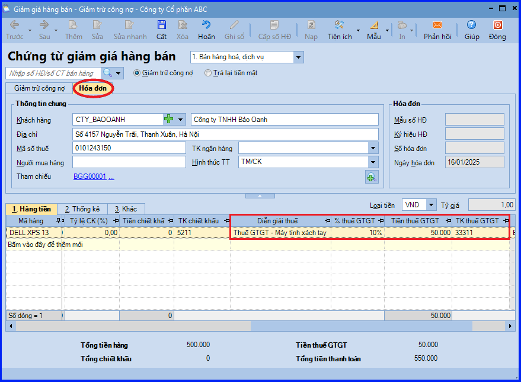
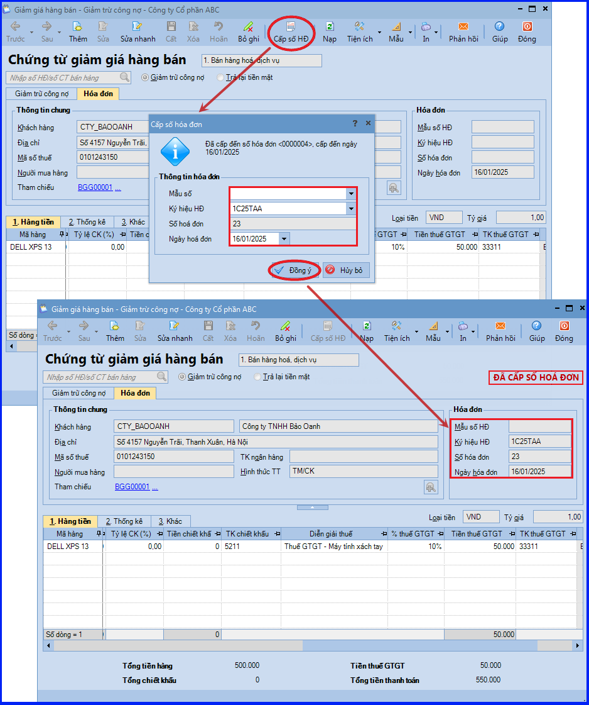
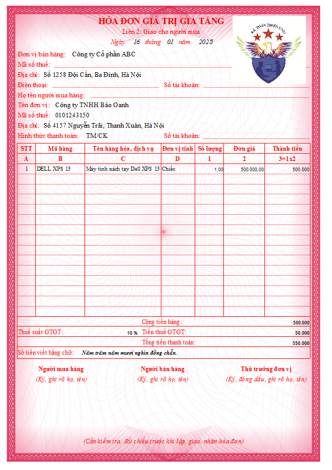

Hướng dẫn cách hạch toán ghi sổ nghiệp vụ bán hàng có giảm giá hàng bán trên phần mềm Misa
Khi phát sinh nghiệp vụ giảm giá hàng bán, thông thường sẽ có các hoạt động sau:
- Nếu phát hiện hàng mua về không đúng quy cách, phẩm chất theo hợp đồng đã ký, khách hàng thoản thuận với doanh nghiệp, đồng thời lập biên bản về việc giảm giá hàng bán. (Trường hợp khuyến mại kèm theo điều kiện phải mua sản phẩm "ví dụ mua 2 tặng 1" cũng được coi như là mua hàng giảm giá hàng bán).
- Kế toán bán hàng lập hóa đơn giảm giá hàng bán để giao cho khách hàng.
- Kế toán bán hàng hạch toán khoản giảm giá hàng bán và ghi sổ kế toán.
1. Cách định khoản hạch toán khi doanh nghiệp bán hàng có giảm giá hàng bán
- Nợ TK 5213 - Giảm giá hàng bán (TT 200)
- Nợ TK 511 - Doanh thu bán hàng và cung cấp dịch vụ (TT 133)
- Nợ TK 3331 - Số thuế GTGT đầu ra được giảm
- Có TK 111, 112, 131… - Tổng số tiền giảm giá
2. Các bước hạch toán, ghi sổ nghiệp vụ bán hàng có giảm giá hàng bán trên phần mềm Misa
- Vào phân hệ "Bán hàng" => chọn "Giảm giá hàng bán" (hoặc vào tab "Giảm giá hàng bán" => ấn "Thêm").

- Chọn loại chứng từ bán hàng cần giảm giá.
- Lựa chọn phương thức giảm trừ cho chứng từ giảm giá.
- Chọn chứng từ bán hàng có mặt hàng được giảm giá theo một trong hai cách sau:
+ Cách 1: Ấn vào biểu tượng mũi tên để chọn chứng từ bán hàng từ trong danh sách.

+ Cách 2: Ấn vào biểu tượng kính lúp để tìm kiếm và chọn chứng từ bán hàng:
- Thiết lập điều kiện để tìm kiếm chứng từ bán hàng, ấn "Lấy dữ liệu".
- Tích chọn mặt hàng được giảm giá và ấn "Đồng ý".

- Khai báo thêm các thông tin trên chứng từ giảm giá hàng bán như: số lượng hàng được giảm, giá trị giảm,…

- Khai báo các thông tin phục vụ cho việc xuất hóa đơn cho hàng bán được giảm.
+ Nếu không sử dụng phần mềm để quản lý việc xuất hóa đơn, Kế toán nhập trực tiếp thông tin hóa đơn GTGT xuất cho khách hàng tại mục "Hóa đơn".
+ Nếu có sử dụng phần mềm để quản lý việc xuất hóa đơn, sau khi cất chứng từ bán hàng Kế toán sẽ sử dụng chức năng "Cấp số HĐ".

+ Ấn "Cất".
+ Ấn "Cấp số HĐ".
+ Khai báo thông tin về mẫu số, ký hiệu hóa đơn và ngày hóa đơn, ấn "Đồng ý".

+ In hóa đơn GTGT để xuất cho khách hàng => Có thể in được hóa đơn theo mẫu chương trình thiết lập sẵn hoặc theo mẫu đặt in để gửi cho khách hàng.

CHÚ Ý:
- Sau khi chứng từ giảm giá hàng bán được cất giữ, chương trình sẽ tự động sinh ra thông tin hóa đơn giảm giá hàng bán trên tab "Xuất hóa đơn" của phân hệ "Bán hàng".
- Nếu lựa chọn phương thức thanh toán là Trả lại tiền mặt và trường hợp Thủ quỹ có tham gia sử dụng phần mềm, chương trình sẽ tự động sinh ra phiếu chi trên tab "Đề nghị thu, chi" của Thủ quỹ. Thủ quỹ sẽ thực hiện ghi sổ phiếu chi vào sổ quỹ.
KẾ TOÁN DIỆU TÂM chúc các bạn làm tốt!
=============================
Nếu bạn muốn thành thạo các kỹ năng làm kế toán trên phần mềm Misa
Thì bạn có thể tham khảo "Khóa Học Thực Hành Kế Toán Trên Phần Mềm Misa" tại Công ty đào tạo Kế Toán Diệu Tâm
Trong khóa học này, bạn sẽ được dạy cách lên sổ sách, lập báo cáo tài chính trên phần mềm Misa
Chi tiết về chương trình đào tạo bạn xem tại đây nhé: Khóa học thực hành kế toán trên Misa
=============================
=============================
Nếu bạn muốn thành thạo các kỹ năng làm kế toán trên phần mềm Misa
Thì bạn có thể tham khảo "Khóa Học Thực Hành Kế Toán Trên Phần Mềm Misa" tại Công ty đào tạo Kế Toán Diệu Tâm
Trong khóa học này, bạn sẽ được dạy cách lên sổ sách, lập báo cáo tài chính trên phần mềm Misa
Chi tiết về chương trình đào tạo bạn xem tại đây nhé: Khóa học thực hành kế toán trên Misa
=============================